Conheça a nossa API
Cadatre-se
Plataforma aberta
Por que ser aberto?
As bases compiladas pelo NeoFluxo representam um amplo escopo de pesquisas envolvendo as eleições presidenciais de 2010 e seu impacto na Internet. Para ampliar ao máximo a execução destas múltiplas possibilidades, o acesso a todos os dados é oferecido à comunidade a partir de uma plataforma aberta, sob uma licença Creative Commons.
Esta plataforma aberta é possível graças a uma interface de programação de aplicativos - em inglês, application programming interface, ou API. Isso significa que qualquer programador pode ter acesso aos dados através de softwares, capazes de estabelecer relações, criar visualizações e, consequentemente, permitir inferências de pesquisadores a respeito do assunto.
Todos os dados da API estão disponíveis nos formatos XML e JSON. Para usá-los, é preciso concordar com seus termos de uso antes de obter uma chave de uso.
Permitir a criação de aplicativos e o acesso de dados, de modo a estender as funcionalidades de um sistema e contribuir para sua melhoria, é algo comum em ferramentas como o Twitter e Facebook, mas ainda é pouco explorado pela área da comunicação - que já podem aproveitar bases de dados disponíveis da mesma forma pelo jornal britâncio The Guardian (www.guardian.co.uk/data-store) ou pelo Governo dos EUA (www.data.gov). Longe de se posicionar como pioneiro no Brasil, o projeto NeoFluxo espera ser uma entre inúmeras iniciativas similares no país.
Banco de dados
Conheça todos os nossos bancos de dados disponíveis
Durante o primeiro e segundo turnos das eleições presidenciais, o sistema NeoFluxo coletou dados de fontes oficiais e menções específicas no Twitter. Estes foram organizados em bancos de dados diferentes, todas acessíveis a partir de uma API, o que permite a qualquer desenvolvedor criar e visualizar possíveis relações entre elas.
Dados coletados a partir dos Canais Oficiais:
- Todas as atualizações provenientes dos canais oficiais dos candidatos Dilma Rouseff e José Serra, na Internet, a partir do Twitter, Facebook, YouTube, Flickr e site oficial (sem filtro);
:: Primeiro turno: entre 11/09/2010 e 03/10/2010
:: Segundo turno: entre 08/10/2010 e 29/10/2010
- Todas as atualizações provenientes dos canais oficiais da candidata Marina Silva, na Internet, a partir do Twitter, Facebook, YouTube, Flickr e site oficial (sem filtro);
:: Primeiro turno: entre 23/09/2010 e 03/10/2010
Dados coletados apenas no Twitter:
- Todas as mensagens globais do Twitter, contendo as palavras "dilma" e "serra" (tabelas separadas).
:: Primeiro turno: entre 11/09/2010 e 03/10/2010
:: Segundo turno: entre 08/10/2010 e 29/10/2010
- Todas as mensagens globais do Twitter, contendo uma ou mais palavras-chave (geradas de maneira automatizadas) a partir dos Canais Oficiais dos candidatos Dilma Rousseff e José Serra. As tabelas, separadas para cada candidato, contém sub-tabelas divididas por dias (os mesmos dias dos programas eleitorais televisivos), onde cada uma dessas sub-tabelas possui 10 (dez) palavras-chave relacionadas.
:: Primeiro turno: entre 11/09/2010 e 03/10/2010
:: Segundo turno: entre 08/10/2010 e 29/10/2010
- Todas as mensagens globais do Twitter, contendo uma ou mais palavras-chave (geradas de maneira automatizadas) a partir dos Canais Oficiais da candidata Marina Silva. As tabelas, separadas para cada candidato, contém sub-tabelas divididas por dias (os mesmos dias dos programas eleitorais televisivos), onde cada uma dessas sub-tabelas possui 10 (dez) palavras-chave relacionadas.
:: Primeiro turno: entre 23/09/2010 e 03/10/2010
- Todas as mensagens globais do Twitter, contendo uma ou mais das palavras-chave (geradas de maneira manual a partir horários eleitorais) dos candidatos Dilma Rousseff e José Serra. As tabelas, separadas por candidato, contém sub-tabelas divididas por dias (criadas após a exibição de cada dos programas eleitorais televisivos), onde cada uma dessas sub-tabelas possui 10 (dez) palavras-chave relacionadas de acordo com a metodologia definida previamente.
:: Primeiro turno: entre 11/09/2010 e 03/10/2010
:: Segundo turno: entre 08/10/2010 e 29/10/2010
- Todas as mensagens globais do Twitter, contendo uma ou mais das palavras-chave (geradas de maneira manual) a partir dos temas relacionados a cobertura da campanha eleitoral feita pelos quatro principais portais brasileiros (Uol, Terra, Ig e G1), num limite de 5 (cinco) termos diários, de acordo com a metodologia definida previamente.
:: Segundo turno: entre 08/10/2010 e 29/10/2010
